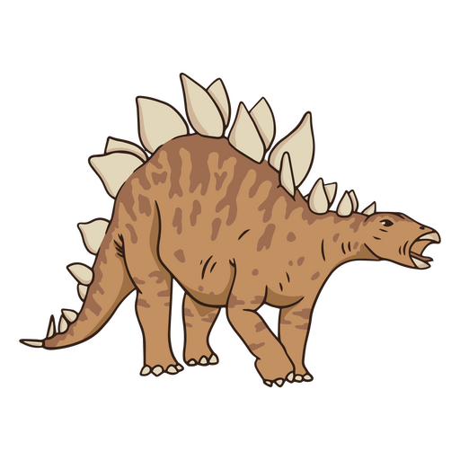

Seção de experiências JavaScript
Clique no seguinte botão para acessar a primeira experência que proporcionaremos com o tema: "Par ou Ímpar"
Acessar experiência
(Estegossauro)

Clique no seguinte botão para acessar a segunda experência que proporcionaremos com o tema: "Contador com Passo"
Acessar experiência
(Braquiossauro)
Clique no seguinte botão para acessar a terceira experência que proporcionaremos com o tema: "Calculadora de IMC"
Acessar experiência
(Parassaurolofo)
Clique no seguinte botão para acessar a quarta experência que proporcionaremos com o tema: "Calculadora Básica"
Acessar experiência
(Anquilossauro)
Clique no seguinte botão para acessar a quinta experência que proporcionaremos com o tema: "Verificador de idade"
Acessar experiência
(Triceratops)
Clique no seguinte botão para acessar a sexta experência que proporcionaremos com o tema: "Gerador de Tabuada"
Acessar experiência
(Giganotossauro)
Clique no seguinte botão para acessar a sétima experência que proporcionaremos com o tema: "Lista de compras"
Acessar experiência
(Edmontossauro)
Clique no seguinte botão para acessar a oitava experência que proporcionaremos com o tema: "Verificador de Palíndromos"
Acessar experiência
(Argentinossauro)
Clique no seguinte botão para acessar a nona experência que proporcionaremos com o tema: "Simulador de Semáforo"
Acessar experiência
(Espinossauro)
Clique no seguinte botão para acessar a décima experência que proporcionaremos com o tema: "Conversor de Temperatura"
Acessar experiência
(Diabloceratops)
Clique no seguinte botão para acessar a décima primeira experência que proporcionaremos com o tema: "Simulador de caixa eletrônico"
Acessar experiência
(Dilofossauro)
Clique no seguinte botão para acessar a décima primeira experência que proporcionaremos com o tema: "Cronômetro"
Acessar experiência
(Paquicefalossauro)
Clique no seguinte botão para acessar a décima primeira experência que proporcionaremos com o tema: "Gerador de Senhas Aleatórias"
Acessar experiência
(Latenivenatryx)
Clique no seguinte botão para acessar a vigésima experência que proporcionaremos com o tema: "Contador com Passo"
Acessar experiência
(Citipati)